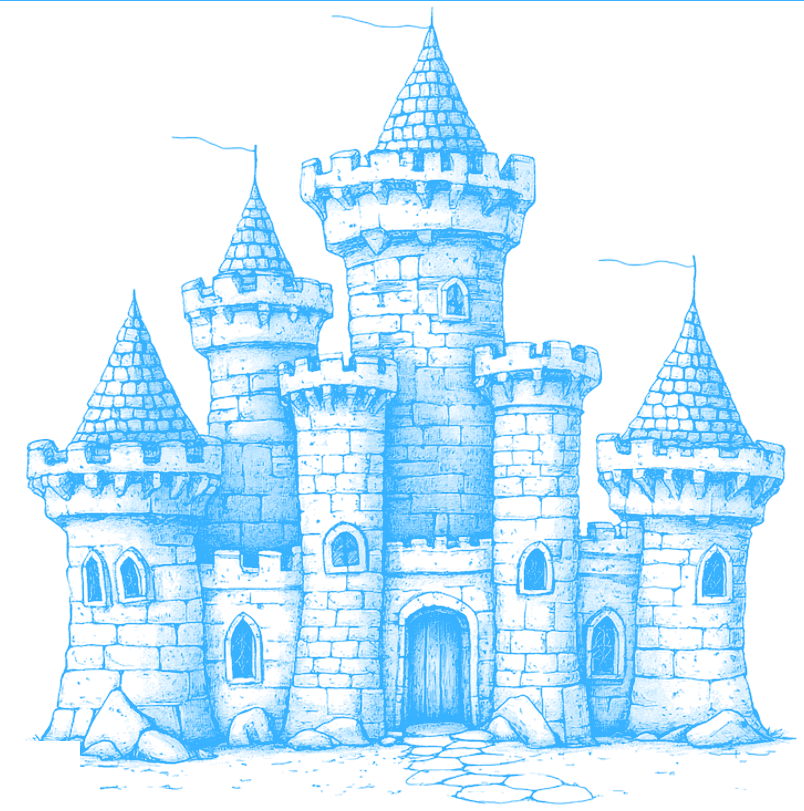

// cat case-file.md

// architecture --modules
01
WORKING
Scanner + API
FastAPI backend running the passive scan engine in the background; results persisted to SQLite, retrieved by ID via a documented REST API.
02
PLANNED
AI analyzer
Claude-powered module to read scanner output, score risk and suggest remediation instead of a raw wall of alerts.
03
PLANNED
Dashboard
React + Tailwind interface to launch scans and visualize vulnerabilities and risk assessments.
PASSIVE CHECKS SHIPPED TODAY
TLS
Protocol version, certificate validity & expiry, cipher suite
Headers
Missing defensive headers, version-leaking headers, redirect chains
Sensitive paths
Probes exposed paths — /.env, /.git/, /admin — and records status codes

THE MODEL
A target's surface is a perimeter — Fortify walks the walls before anyone else does.
Each passive check maps to a gate in the wall: TLS is the drawbridge, headers are the battlements, exposed paths are the postern doors left ajar. The scan reports which are open, which leak, and which hold — read-only, safe against systems you're authorized to test.
dashboard — arriving in Phase 4
React + Tailwind scan-results view